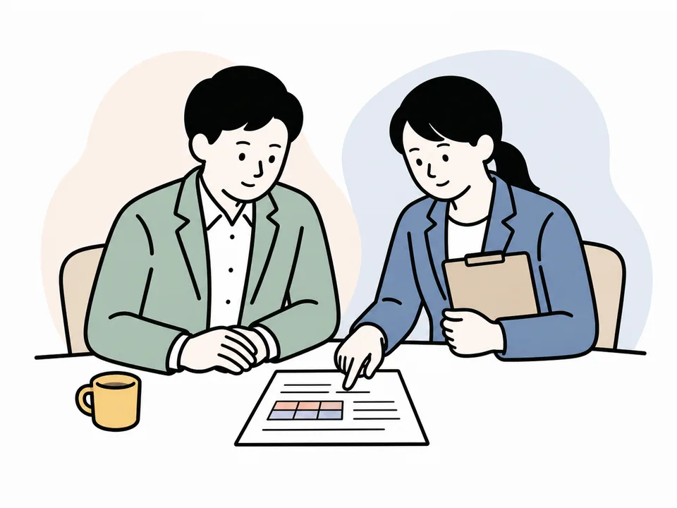

給与計算なし
スタート顧問
25,000円／月・
通常月
従業員5名まで
- 社会保険・雇用保険の
手続き - 年度更新・算定基礎届・賞与支払届
- 手続きの
相談・月1回の 報告 - 就業規則の
年1回の 点検・報告 - 助成金・法改正情報の
ご案内
給与計算・
6人目から
創業期の
手続きだけでも、
会社の
顧問料は
初回30分・

01 / 料金
創業割：通常月額から
契約開始日に
31名以上・
初回相談は無料です。
02 / 任せられる
入退社の
受け取った
問題社員・
別料金：新規適用、
助成金は
03 / 設立直後の
顧問契約の
顧問契約と
単発利用後3か
必要な
04 / 相談から
設立日・
任せる
必要資料・連絡方法・
05 / よくある質問
初回相談無料・